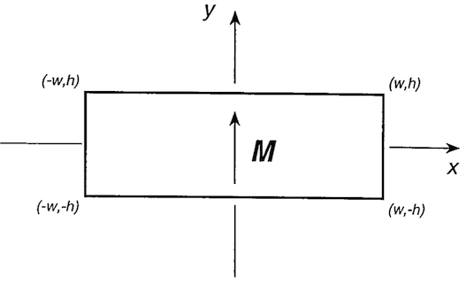

Composite Magnets
Note
- SI Units with the Sommerfeld convetion are used for this discussion: \(\mathbf{B} = \mu_0 \left( \mathbf{H} + \mathbf{M} \right)\)1
- However, the Kennelly Convetion is used for the creation of each magnet object in the library: \(\mathbf{B} = \mu_0\mathbf{H} + \mathbf{J}\)1
- In free space \(\mathbf{B} = \mu_0 \mathbf{H}\)
- In magnetised bodies, the demagnetising field \(\mathbf{H_d} = - N \mathbf{M}\), where \(N\) is the demagnetising factor.
2D Polygons
Line Elements

The magnetic field due to an infinitely long, thin magnetic sheet of height \(2h\) with a surface current density \(\mathbf{K} = K_0 \mathbf{\hat{z}}\) is1
and
Composite Polygons
An object consisting of two vertical sheets, one at \(-w\) with \(\mathbf{K} = -K_0 \mathbf{\hat{z}}\), and one at \(+w\) with with \(\mathbf{K} = K_0\mathbf{\hat{z}}\) will produce the same field as a rectangular magnetic of width \(2w\), height \(2h\), and remnant magnetisation \(\mathbf{J_r} = J_y \mathbf{\hat{y}}\),
The surface current \(\mu_0 \mathbf{K}\)
where \(\mathbf{\hat{n}} = n_x \mathbf{\hat{x}} + n_y \mathbf{\hat{y}} + 0 \mathbf{\hat{z}}\) is the unit normal vector to the magnetic sheet, and \(\mathbf{J} = J_x \mathbf{\hat{x}} + J_y \mathbf{\hat{y}} + 0 \mathbf{\hat{z}}\) is the remnant magnetisation vector of the composite polygonal magnet.
3D Polyhedra
For polyhedra composed of right angled triangles, the magnetic field can be calculated as the sum of magnetic fields due to these elements3:
and similarly
where
\(c = \sqrt{a^2 + b^2}\)
\(r = \sqrt{x^2 + y^2 + z^2}\)
\(r_2 = \sqrt{ (a - x)^2 + y^2 + (b - z)^2 }\)
\(r_3 = \sqrt{(a-x)^2 + y^2 + z^2}\)
\(s = \frac{ax + bz}{c },\, t = \frac{a (a-x) + b(b-z)}{c}\)
where
\(\alpha = \sqrt{1 + \frac{b^2}{a^2}}, \, \beta = - \frac{x + \frac{bz}{a}}{\alpha^2}, \, \gamma = \sqrt{\frac{r^2}{\alpha^2} - \beta^2}\)
\(\delta = \frac{\alpha + \beta}{\gamma}, \, \eta = \frac{\beta}{\gamma}\)
\(A = -\gamma \frac{b}{a},\, B = \gamma\alpha,\, C = z + \beta\frac{b}{a}, \, D = \sqrt{B^2 - A^2 - C^2}\)
-
J. M. D. Coey, Magnetism and Magnetic Materials (Cambridge University Press, 2010). ↩↩↩
-
E. P. Furlani, Permanent Magnet and Electromechanical Devices (Academic Press, San Diego, 2001). ↩
-
J. Hilton, Computational Modelling of Novel Permanent Magnetic Designs, Ph.D. thesis, Trinity College (Dublin, Ireland), School of Physics, (2005). ↩